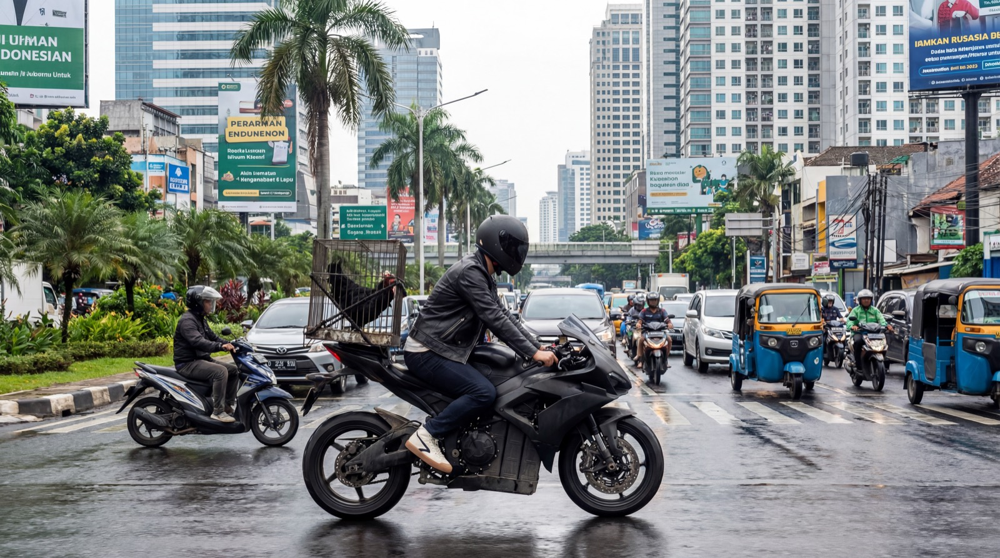

Two orphans. One rooster. All of Indonesia against them.Два сироты. Один петух. Против них — вся Индонезия.
Nyoman hatched the rooster Bro himself, from an egg stolen out of the orphanage canteen. Ahmed, a street fighter raised by the port, owes a mob boss a champion bird — and Bro is its spitting image. One rigged fight later, the boys are running from Jakarta to Bali with a stolen hardware wallet, hunted by the syndicate of Miss Tonako. Ньоман сам высидел петуха Бро из яйца, украденного в интернатской столовой. Ахмед, уличный боец из порта, должен боссу мафии бойцового петуха — и Бро похож на него как две капли воды. Одна подмена на боях — и мальчики бегут из Джакарты на Бали с украденным аппаратным кошельком, а по их следу идут люди мисс Тонако.
Underneath the chase: a film against cruelty. A child who refuses to accept the world of fights — and makes the adults see it. Под погоней — фильм против жестокости. Ребёнок не принимает мир боёв — и заставляет взрослых его увидеть.
